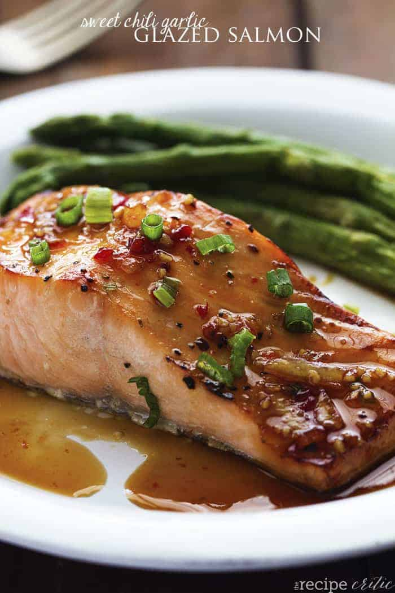

3-Ingredient Chili-glazed Salmon

Description
Quick and easy salmon dinner with some extra kick
Ingredients
- 4 oz salmon(115 g), 3 fillets
- ½ cup chili sauce(130 g)
- ¼ cup fresh scallions(25 g), chopped
Directions
-
Preheat oven to 400°F (200˚C).
-
In a bowl, mix together the salmon, chili sauce, and the scallions.
-
Place the fillets on a baking tray lined with parchment paper.
Spoon any leftover sauce on top of the salmon.
-
Bake for 12-15 minutes, until the salmon is cooked but still tender.